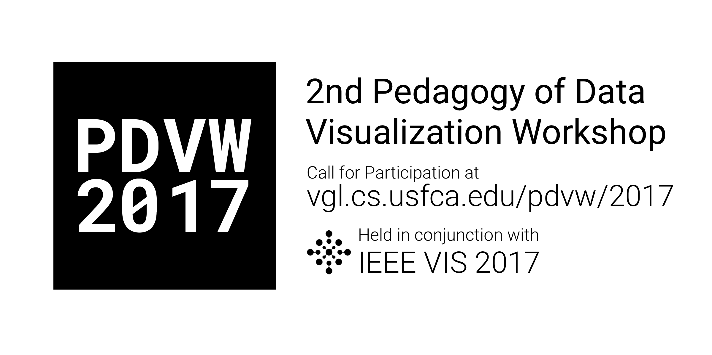

Welcome to the 2nd Pedagogy of Data Visualization Workshop (PDVW 2017), which will be held at IEEE VIS 2017 on October 1st or 2nd, 2017 in Phoenix, Arizona.
The pedagogy of data visualization is becoming increasingly important as data visualization techniques and tools proliferate. In this half-day interactive workshop, we propose to create a community of practice that supports each other as they learn to be better teachers in their respective classrooms.
Our Call for Participation is online. Contact us if you have any questions! #PDVW hashtag:
Our Twitter flyer is here! Feel free to share with the #PDVW hashtag:
